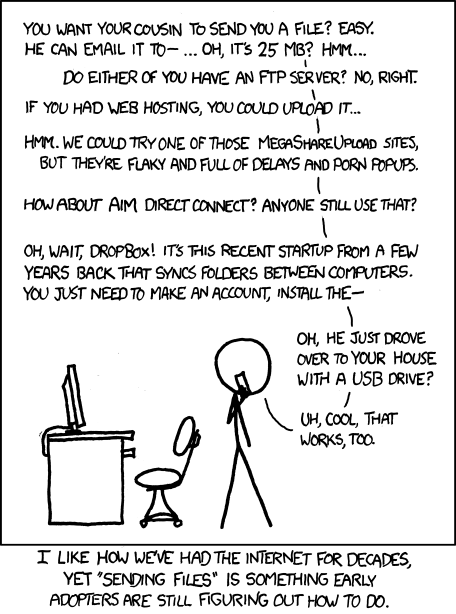
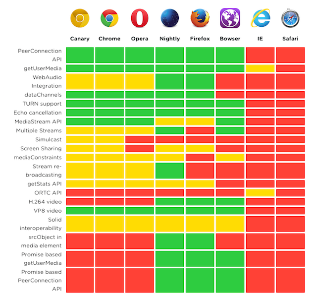

WebRTC là một dự án open source cho phép liên lạc thời gian thực của audio, video và dữ liệu trên Web và các ứng dụng native.
Thậm chí đến tận bây giờ, việc chia sẻ file vẫn là khó khăn:

WebRTC bao gồm một số API sau:
Các API này khá là ổn định và được nhiều trình duyệt hỗ trợ: trên Firefox, Opera, Chrome trên desktop và Android; trên các ứng dụng native của iOS và Android.
Để sử dụng các thành phần và API của WebRTC, chúng ta cần một nguồn an toàn (HTTPS hoặc localhost). Kỹ thuật signal không được định nghĩa bởi chuẩn WebRTC, do đó nó tùy thuộc vào bạn có sử dụng HTTPS hay không.
Xem thêm:
STUN, TURN
Steps:
Many applications today use peer-to-peer capabilities, such as file sharing, text chat, multiplayer gaming, and even currencies.
References
https://codelabs.developers.google.com/codelabs/webrtc-web/#0
https://github.com/muaz-khan/WebRTC-Experiment
https://github.com/webrtc/samples
Anychat - Welcome to your chat!
Get Media Stream
Hãy xây dựng một ứng dụng lấy video và chụp ảnh từ webcam của bạn và chia sẻ nó peer-to-peer bằng WebRTC.
mediastream-01.html (Basic)
photobooth.html (Photo Booth)
Chú ý:
Đối tượng video phải có thuộc tính autoplay.
Stream video với RTCPeerConnection (trên 1 trang)